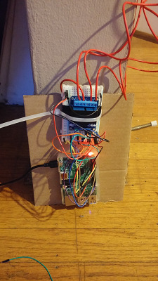
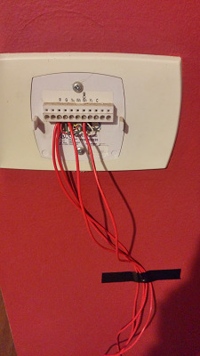

|  |  |
Smarty McHomeFace is an ongoing experiment in home automation using a Raspberry Pi B+.
It currently presents a crude web-interface (not
publicly accessible) for heating controls. I plan on adding schedules (maybe
via It supports heating schedules via a
Google
Calendar API hack. There are a few other cron)? eventually.experimental
somewhat broken features that include playing a custom greeting sound when the
Pi detects a specific device has connected to the LAN (usually happens when
someone returns home) or when someone walks by a motion sensor.
twisted
web framework and Python
Raspberry Pi GPIO Library. Specifically, hardware includes DS18B20
(as explained on adafruit) temperature sensor along with this pair of relays to
switch the heat and fan. I found a wiring diagram for the thermostat that was
originally installed in the house by Googling the model number of the thermostat
that was originally installed. After finding the wiring diagram I dangerously
experimented with jumper wire to determine how to switch the heat and fan.
Attempt this at your own risk.
gpiozero
interface for the Pi.